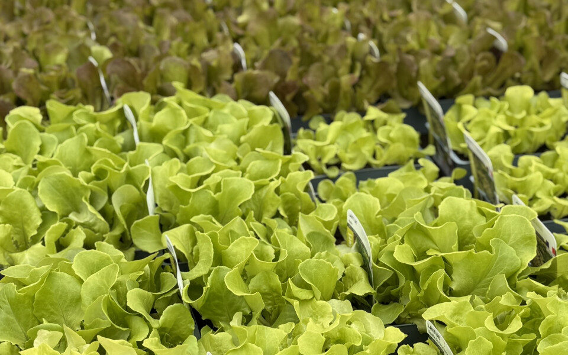
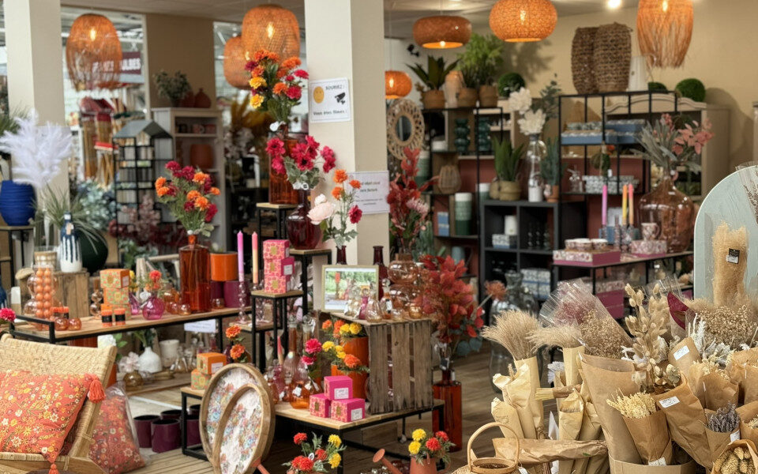

Serres froides
Très peu de chauffage, seulement lors des périodes de gel : des plantes plus vigoureuses, sans choc thermique une fois dans votre jardin.
Artisan du végétal depuis 1956, Le Temps des Fleurs cultive en serres froides des plantes, fleurs, arbres, arbustes et plants du potager pour votre jardin ou votre balcon.
Créée en 1956 par Georges Ducarre, l'entreprise familiale se transmet de « père en fils » avec la reprise du fils Pascal et de son épouse Sophie, et aujourd'hui la 3e génération avec le petit-fils Stéphane et son épouse Lucie.
D'abord vendue sur les marchés de la région et au magasin de fleurs de Marcigny, la production s'ouvre aux particuliers au début des années 80, avec les fameuses « foires aux fleurs » connues dans toute la région. Vous pouvez vous promener dans nos serres et découvrir notre production horticole.

Plantes à massifs (annuelles ou vivaces), grand choix en géranium, plantes retombantes, grimpantes, méditerranéennes, plants du potager, graminées, chrysanthèmes… mais aussi arbres, arbustes, haies, rosiers et fruitiers.
Hortensias, millepertuis, noisetier tortueux, bruyères… pour structurer le jardin.
Notre spécialité d'origine : multiplicateur de géranium, et un grand choix de plantes à massifs et retombantes.
Clématites, glycines… pour habiller murs et pergolas.
Salades, légumes et aromatiques, plants de pomme de terre.
Agrumes, lavandes, perovskia : le soleil du Sud au jardin.
Hibiscus, vivaces, cyclamens et chrysanthèmes selon la saison.
Très peu de chauffage, seulement lors des périodes de gel : des plantes plus vigoureuses, sans choc thermique une fois dans votre jardin.
Coccinelles et chrysopes contre les pucerons, plutôt que des produits toxiques.
Et la moindre goutte d'arrosage non absorbée est récupérée par le plancher puis réutilisée.
Les produits phytosanitaires seulement en dernier recours, pour préserver l'équilibre des serres.
Choisissez le mois et votre coin de jardin : on vous montre ce qui se plante maintenant et le geste du moment. Ajoutez ce qui vous tente à votre liste, elle vous suit jusqu'aux serres.
Suggestions indicatives tirées des gammes cultivées aux serres ; la disponibilité dépend de la saison et des cultures en cours — un coup de fil au 03 85 25 41 70 pour être sûr.
Des compositions prêtes à poser pour garder de la couleur jusqu'aux gelées.
Parfum, soleil et pollinisateurs, en massif ou en pot.
Un arbuste facile qui fleurit jaune tout l'été.
La grimpante des façades et des pergolas.
La floraison de l'automne et de l'hiver, dedans comme dehors.
Des branches spiralées qui font tout le décor en hiver.
Pour les jardinières d'hiver et les sols de terre de bruyère.
Un nuage azur idéal pour le plein soleil.

Découvrez notre gamme de produits jardin, et l'espace déco pour faire entrer le végétal dans la maison.
Le Temps des Fleurs
1 rue Molle, 71110 Marcigny
À proximité de Charlieu, Pouilly-sous-Charlieu, Iguerande, Chauffailles, La Clayette, Paray-le-Monial, Digoin, Charolles, Roanne, Le Coteau, Mably, Riorges, Renaison, La Pacaudière…